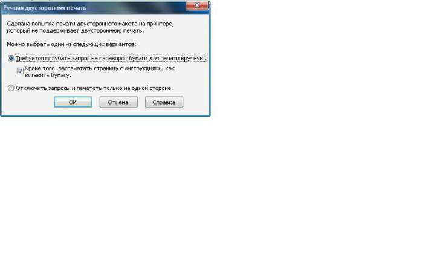

Двусторонняя печать
shtorm007 / 14.12.2010, 12:23/00:41
Форум:
Здравствуйте! Есть макет в корел х4. Сделан постранично. Хочу напечатать брошюру. Проблема в чем. Все печатало до того момента, как сказал корелу, что напечать в одностороннем варианте. Он перестал спрашивать, печатать ли с двух сторон на данный принтер, и брошюру печатает тока с одной стороны. В настройках не нашел отмены данной галочки....... Пробовал снести корел, почтистить реестр - не помогло. Все равно не спрашивает. На виртуальный принтер посылаю - спрашивает.

Данная табличка при печати на реальном принтере не появляется. В мастере двусторонней печати для принтера стоит, что двусторонняя есть.
Помогите, плиз, кто знает.
Брошюру не CorelDRAW печатает с одной стороны, а принтер. Принтер интеллектом не обладает.
Выберите режим "Брошюра". Отмените запросы принтера на двухстороннюю печать, соглашаетесь на одностороннюю. Но листы в принтер подавайте по одному: сначала печатается лицевая сторона первого листа с парой страниц последняя-первая, затем этот лист подаёте в принтер другой стороной и печатается оборотная сторона этого листа с парой страниц первая плюс1 - последняя минус 1; и т.д.
Если большой тираж, то лучше конечно печатать сразу пачку листов с одним разворотом страниц, затем её переворачиваете, подаёте в лоток принтера и печатаете другой разворот, но режим выбираете уже не "брошюра", а "2 х 1" и указываете конкретные номера пары страниц через запятую.
Примечание: если даже у Вас количество страниц не кратно четырём, что требуется при печати брошюр, то Вы можете не беспокоиться, CorelDRAW сама добавит нужное количество пустых страниц в конце брошюры.
Принтер двусторонней печати не имее. Все управлялось корелом. Он распечатывал передние страницы, после нажатия ОК - задние. А теперь, гад, не хочет.
попробуй переименовать принтер или снеси и заново поставь драйвер. вобщем чтоб корел подумал что это другой принтер.
кстати, как в нем двусторонне печатать?
а то я по привычке сначала нечетные потом четные отправляю.
Я ставлю при печати макет - брошюра. Отсюда появляется двусторонняя печать. Но можно выбрать как есть, страница, а в окне настроек компоновки макета (кнопка изменить) - клацнуть кнопку односторонний/двусторонний.
А если указать печатать четные, а потом нечетные страницы (или наоборот)